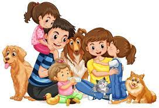

Adotar é um ato de amor!
O filho de quatro patas que vai alegrar sua família está aqui, só esperando pela chance de te fazer (mais) feliz!
Mais de 20 animais, dentre cães e gatos de muitas idades, tamanhos, cores e personalidades. Castrados, vacinados e vermifugados. Veja os focinhos na área de adoção e marque sua visita para conhecê-los.